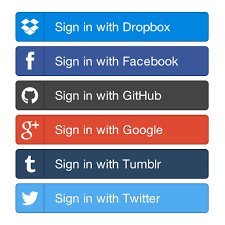

Presented by Alex Simons
A simplified tale about security.
Build an application that does a thing!
And that can also be shared (securely).
1. I shouldn't hate myself.
2. Support many social logins.
Eyes on the prize.
It's just one click, how hard can it be?
Not all buttons are created equal.
How do I go from no button to button?
JSON you can give to your friends/APIs!
JSON that you can trust!
JSON never give you up! (for a little bit)
JSON never let you down!
{
"preferred_username": "DatBoi",
"given_name": "Alex",
"name": "Alex Simons",
"family_name": "Simons",
"email": "alexsimons9999@gmail.com"
}
How else will they know who I am?
{
"kid": "694Pa2KEd7kyAVc420OTlsrLO90017s/w5RRJ2UcLTU=",
"alg": "RS256"
}
{
"iss": "https://google.com/fancy-json-maker",
"exp": 1594649669
}
More JSON, Less problems!
Built-in tamper proof technology!
{
//..
"preferred_username": "DatBoi",
"given_name": "Alex",
"name": "Alex Simons",
"family_name": "Simons",
"email": "alexsimons9999@gmail.com",
"access_scopes": [
"withdraw_monies:your-bank-account-lol"
],
//...
}
Just trust your Fancy Header JSON issuer and their fingerprints.
Some Social login buttons (the OAuth kind) includes a bonus gift.
The power to get more FHJ!
Some button's Refresh Tokens are not always FHJ.
interface OAuthLoginButtonGift {
access_token: FancyHeaderJSON;
refresh_token: FancyHeaderJSON | SomethingElse;
}
A bunch of nerd stuff happens and you get this.
It depends on what button I clicked.
And also what you asked for as well.
Define the scopes of what your FHJ can do
You can ask for user's: Email or API access
Your FHJ now can use API's such as
It now becomes a GitHub resource server!
Which only accepts FHJ from the GitHub Issuer
That's good for building apps just for GitHub.
I need all the buttons and trust only one FHJ issuer!
Something that issues FHJ.
Something that figures out who users are based on buttons.
I need to know who my user is (eg: their email).
Nope.
I need something different
What's the difference?
interface OAuthLoginButtonGift {
access_token: FancyHeaderJSON;
refresh_token: FancyHeaderJSON | SomethingElse;
}
interface OpenIDConnectButtonGift extends OAuthLoginButtonGift {
id_token: FancyHeaderJSON;
}
Now what?
How to mimic a production like environment locally.
Deploy to your own production without OpenShift.
Get basic working knowledge AWS and some DevOps techniques.
How to minimize the amount of costs you will be responsible to pay.
- To see my production setup.
- Source code from this
presentation
- Slides in website format.